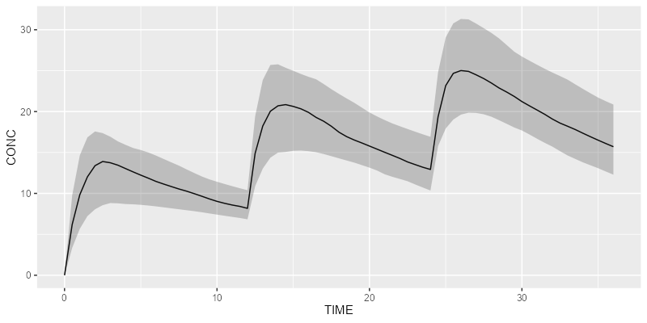

Requirements
- R package
campsismodmust be installed beforehand - Simulation engine must be installed too (either
RxODEormrgsolve)
Installation
Install the latest stable release using devtools:
devtools::install_github("Calvagone/campsis")Basic example
Import the campsis package:
Create your dataset:
ds <- Dataset(50) %>%
add(Bolus(time=0, amount=1000, ii=12, addl=2)) %>%
add(Observations(times=seq(0, 36, by=0.5)))Load your own model or use a built-in model from the library:
model <- model_library$advan4_trans4Simulate your results with your preferred simulation engine:
Plot your results:
shadedPlot(results, "CP")